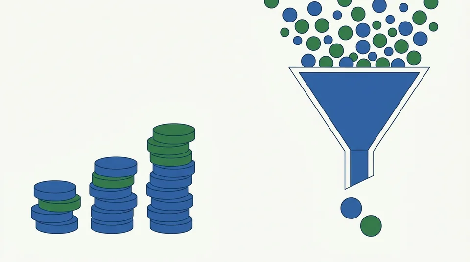

このサイトをつくった理由
公開 数字は 2026-09-04 時点

給料以外の収入を、無理なく増やしたい
このサイトは、給料のほかにも少しずつ収入を増やしたい、 けれども無理はしたくないという考えからつくりました。
株の売買でうまく儲ける自信はありません。 安いときに買って高いときに売る、という判断を続けられる人はごく一部だと思います。 そうではなく、買ったあとは基本的に放っておいても、 少しずつ資産が積み上がっていくやり方はないか、というのが出発点です。
配当は、持っているだけで受け取れる
配当は、権利が確定する日に株を持っていれば受け取れます。 売買のタイミングを当てる必要がありません。 株価が上がったか下がったかに関わらず、会社が配当を出す限り、 持っている人に配られます。
だから「値上がりを狙う」のではなく「配当を受け取り続ける」ことを軸にすれば、 相場を読む力がなくても続けられるのではないか、と考えました。
ただし、利回りの高さだけでは選べない
「放っておいても大丈夫」という前提が崩れるのは、減配された瞬間です。 だから利回りの前に、配当を払い続けられるかを見ることにしました。
だから、財務の健全さを一緒に見る
そこで本サイトは、利回りだけでなく「配当を払い続けられそうか」を 一緒に見ることにしました。自己資本比率、営業利益率、流動比率、手元の現金、 利益剰余金で配当を何年払えるか——こうした10項目を、 上場企業3,535社ぜんぶに毎朝あてはめています。
2026-09-04 時点で、絞り込みはこうなりました。
配当を出している会社は3,010社あり、利回りの中央値は2.64%です。 利回りが3.75%以上ある会社は650社ありますが、 そこから財務の項目まで満たす会社は12社まで減ります。 「高配当」と「財務が健全」は、めったに両立しません。 だからこそ、人が手で探すのは大変で、機械に毎日やらせる意味があると考えています。
それでも「候補」でしかありません
ここに出ているのは候補であって、買っていい株ではありません。
毎日更新している理由
株価は毎日動きます。株価が動けば利回りも変わり、 利回りが変われば判定も変わります。決算が出れば財務の数字も入れ替わります。 書きっぱなしの記事はいずれ嘘になるので、 本サイトの記事に出てくる数字は、すべて毎朝計算し直しています。
次に読むとよいもの
- はじめての方へ … 最初に見るとよい3つの数字
- 配当利回りが高い株ほど良い、とは限らない理由
- 売買のタイミングを当てなくてよい、という考え方
- 10項目とは
本サイトは情報提供のみを目的としており、投資勧誘・投資助言ではありません。投資判断はご自身の責任でお願いします。